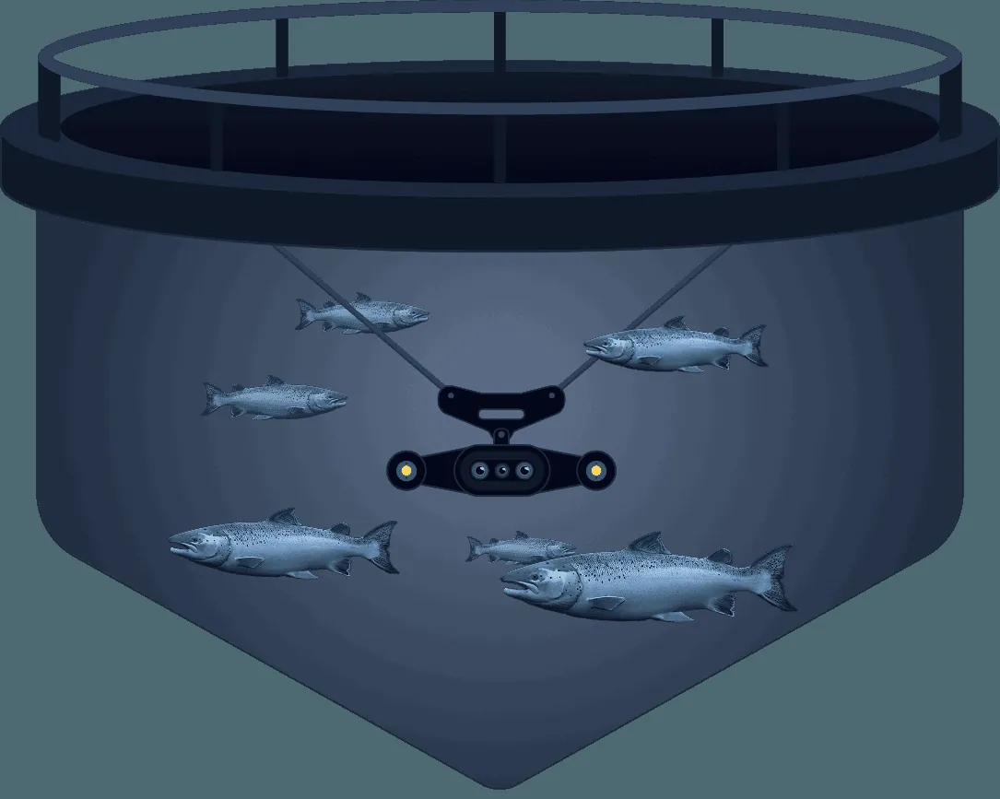

AI-drevet innsikt · Laksevåg
AI-drevet innsikt fra din merd.
Aquabyte leverer presise data på velferd, lus, adferd og vekst – og gir deg grunnlaget for smartere beslutninger i den daglige driften.
1,3 mill.Bilder per kamera, daglig
800+Systemer i merder
8 årMed datainnsamling
Produkter
Fem spørsmål, ett system
Hvor stor er fisken, hvor mye lus er det, hvordan har fisken det, spiser den, og hvordan oppfører den seg?
Slik virker det
Fra bilde til beslutning
Kontinuerlig innsamling og analyse gjør det enklere å følge utviklingen over tid og oppdage endringer tidlig.
- 01Kameraet filmer fisken i merden, hele døgnet.
- 02Modellene teller, måler og klassifiserer – bilder til tall.
- 03Tallene blir innsikt i portalen: vekt, lus, velferd, fôr.
- 04Du tar tiltak tidligere, med data i bunnen.
1,3 mill.Bilder per kamera, hver dag
800+Systemer i merder
2017Grunnlagt
8 årDatainnsamling

Hydra 360
Full oversikt over merden
Vårt Hammerhead-kamera er spesielt utviklet for optimal ytelse i nedsenkede merder. Hydra 360 gir fiskehelse- og fôringskamera i én enhet.
- Fiskehelse og fôring i samme enhet.
- Flere sensorer, kompakt størrelse.
- Data rett inn i portalen.
Vil du se hvordan det virker i din merd?
Book en demo, så går vi gjennom hva som må på plass.